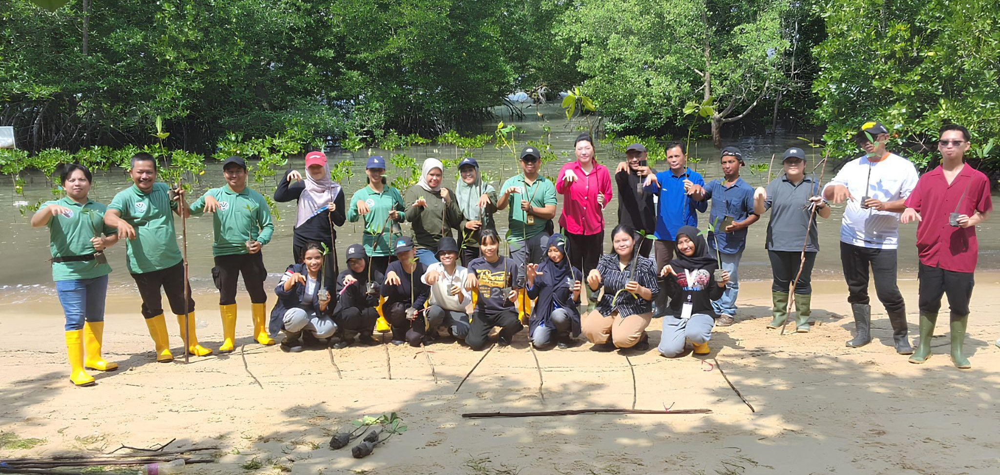
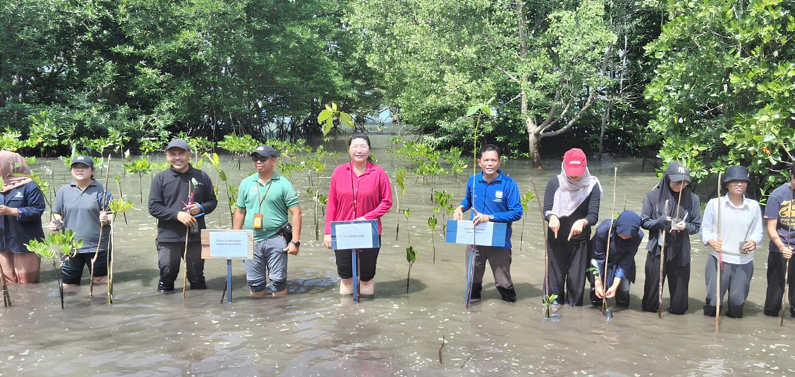

23 Desember 2025

Upaya pelestarian lingkungan kembali diperkuat melalui kegiatan penanaman mangrove yang diselenggarakan di Ekowisata Mangrove Pandang Tak Jemu, salah satu kawasan edukasi dan wisata alam berbasis konservasi di Kota Batam. Informasi mengenai kawasan ini dapat ditemukan melalui situs resmi Ekowisata Mangrove Pandang Tak Jemu. Kegiatan ini merupakan kolaborasi antara PT Musim Mas melalui program Corporate Social Responsibility (CSR), bekerja sama dengan Dinas Lingkungan Hidup (DLH) Kota Batam, serta didukung oleh Dinas Pariwisata Kota Batam. Puluhan bibit mangrove ditanam di kawasan ekowisata sebagai langkah untuk memperkuat fungsi ekologis pesisir, mencegah abrasi, dan mendukung pengembangan wisata alam berkelanjutan. Kegiatan yang berlangsung sejak pagi ini diikuti oleh berbagai instansi, komunitas, dan mahasiswa.

Perwakilan PT Musim Mas menyampaikan komitmen perusahaan terhadap pelestarian lingkungan melalui inisiatif CSR. “Kami berharap mangrove yang ditanam hari ini dapat tumbuh baik dan memberi manfaat bagi generasi mendatang,” ujar Sherly, perwakilan PT Musim Mas. Komitmen keberlanjutan PT Musim Mas melalui berbagai program CSR dapat kamu lihat lebih lengkap di situs resminya. DLH Kota Batam juga menilai kegiatan ini sebagai bagian penting dari upaya konservasi pesisir. “Mangrove berperan besar melindungi garis pantai. Penanaman ini adalah momentum penting untuk memperkuat konservasi pesisir di Batam,” ungkap Pak Ip, perwakilan DLH Kota Batam. Dukungan turut diberikan oleh Dinas Pariwisata Kota Batam yang memandang pelestarian lingkungan sebagai fondasi utama pengembangan ekowisata. “Kegiatan ini penting untuk memastikan Batam tetap hijau dan nyaman sebagai kota tujuan wisata. Kami berharap kolaborasi seperti ini berlanjut dan semakin melibatkan mahasiswa,” ujar Pak Amuri, perwakilan Dispar Kota Batam. Sebagai pengelola kawasan, Ekowisata Pandang Tak Jemu mengapresiasi keterlibatan berbagai pihak dalam menjaga kelestarian mangrove. “Ini momentum penting untuk menyatukan pemerintah, swasta, akademisi, dan masyarakat dalam menjaga ekosistem pesisir,” ujar Pak Gari, Ketua Pokdarwis Ekowisata Mangrove Pandang Tak Jemu. Tidak hanya itu, perwakilan Dinas Perpustakaan dan Kearsipan (Dispusip) Kota Batam juga hadir sebagai peserta dan menyampaikan pandangan positifnya. “Penanaman mangrove ini adalah investasi bagi generasi mendatang. Semoga kegiatan seperti ini memotivasi lebih banyak pihak untuk menjaga kelestarian mangrove,” ujar Pak Rustam, perwakilan Dispusip Kota Batam. Kegiatan penanaman mangrove ini diharapkan menjadi langkah berkelanjutan dalam menjaga ekosistem pesisir, memperkuat edukasi lingkungan, dan mendukung pengembangan ekowisata berkelanjutan di Kota Batam melalui sinergi lintas sektor.